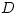

Petri net
From Scholarpedia
| Carl Adam Petri and Wolfgang Reisig (2008), Scholarpedia, 3(4):6477. | revision #37208 [link to/cite this article] | |||||||||||||||||||
Curator: Dr. Carl Adam Petri, University of Hamburg, Germany
Curator: Dr. Wolfgang Reisig, Humboldt-Universitaet zu Berlin Berlin, Germany
A Petri net is a graphical tool for the description and analysis of concurrent processes which arise in systems with many components (distributed systems). The graphics, together with the rules for their coarsening and refinement, were invented in August 1939 by the German Carl Adam Petri - at the age of 13 - for the purpose of describing chemical processes, such as Fig. 1.
Contents[hide] |
Anatomy of a Petri net
The components of these nets are called states (for substances) and transitions (for reactions). The round symbols denote states (also called places or, more abstractly, conditions); the rectangular shapes denote transitions . They are interconnected by arrows which show the direction of flow. The activities of transitions are accordingly subdivided in give and take. The black marks (or tokens) are moved by the occurrence of transitions; the describe the present state-of affairs; in the picture above, they show the initial state. Each mark may stand for one molecule but also for 1 Mol consisting of over molecules. Note that is present twice, for the two separate roles of .
By convention, the state symbols of regularly built nets are often omitted, in order to show their abstract structure more clearly, which may result in surprising shapes (Fig. 2).
Interchanging and in the production net gives a totally different structure, called an organization net (Fig. 3). Here, the transitions denote offices and the states denote channels, capable of holding messages (such as commands) until they are taken away (obeyed) by a subordinate office. The net shows an organization structure with two offices , of equal rank who can issue orders independently if channel capacity permits them to. Offices like  and are rare in human organizations but they do exist, e.g. in the military.
The most important class of nets are cyclic nets in which each arrow lies on a directed circuit. If well structured, they express the idea of an infinitely repeatable process (Fig. 4). A finite piece of their history can be described by an occurrence graph (a production net).
This net has the same structure as a mechanical oscillator (where momentum is caused by the displacement of a mass owing to a retracting force).
General net theory
The algebraic aspect of distributed systems was described by Petri in 1962 in his doctoral thesis "Communication with Automata" (Petri, 1966), in which it was argued that the then prevailing theory of automata had to be replaced by a new theory which respected the results of modern physics, especially of Special Relativity and of the Uncertainty Principle, to yield a theory of distributed systems which was not in contradiction with physical laws (basic net theory).
That thesis was followed by a series of papers by Petri and his helpers on net applications in various areas of science (economics, mechanics, computer science, logic, organization, biology, telecommunication protocols...) with a view to create a tool for interdisciplinary transfer of structural knowledge. The concept of higher-level nets was prepared by the axiomatic foundation of general net theory (GNT), comprising a general definition of net, the basic transition rule, the creation of higher level nets, and the step to any number of dimensions.
In detail, the GNT is founded on the following axioms:
- 1.1 The empty set is not a net (relevant to theorem proving)
- 1.2 and are separate sets
- 1.3 There are no isolated elements in a net
- 1.4 There are no short circuits (both forward and backward arrows between two elements)
An event is a set of concurrently executable transitions. Event axioms:
- 2.1 (Every net can be marked so that) the class of events is not empty
- 2.2 Transitions in the same event have non-overlapping sets of connected states
- 2.3 Each transition in an event e has all incoming states marked, after e unmarked
- 2.4 Each transition in an event e has all outgoing states unmarked, after e marked
Mappings from one net to another are governed by the axioms
- 3.1 A map does not invert arrows
- 3.2 A map is continuous in the sense of topology: it does not destroy neighbourhood.
The connectivity matrix of a basic net is an  matrix with entries
matrix with entries
Meaningful sequences of nets, denoting a multi-dimesional object, are constructed thus:
- 4.1 of net is identical with of
- 4.2 of net multiplied by of yields a zero matrix
Axioms *3 describe the conceptual step from basic nets to higher level nets in which arrows can carry labels, states can carry any number of tokens, transitions can mean any composite process, and short circuits are allowed if their meaning is defined. The Event Axioms have to be re-defined accordingly.
Axioms *4 define the dimensional step from basic nets having only two kinds ( and ) of elements to net piles with any required number of kinds. Assume we want to express the shape of a cube by nets: Take the net of corners and edges, and pile up the net of edges and faces - consistent orientation is required. We get a net pile with three kinds of elements: corners , edges and faces . Thus, we are prepared to tackle the ten or eleven dimensions of String Theory.
Marking class, safety, security, and fairness
Given an initial marking, there is often the task to enquire not only the future but also the past of the history of the net. Therefore, the marking class is defined as the set of markings which are reachable from the initial marking by forward and backward execution of transitions.
A net structure is called safe if there are no contact situations in its marking class. Contact is given when a collision of tokens threatens because axioms 2*3 and 2*4 are not satisfied.
A net structure is called secure if there are no transjunctions in its marking class. A transjunction is a conjunction of conditions across a transition: an input condition is marked and also an output condition. Tokens denoting electromagnetic signals might interfere.
Some nets allow two or more independent processes kept apart by a mechanism of mutual exclusion. This mechanism ensures that only one of the processes can enter a critical phase on each repetition. The working of the mechanism is described below: the mutual exclusion is embodied by a dead transition which can never occur. Dead transitions are called facts because they represent factual statements about the marking class.
The schedule on the left can be misused by a fast competitor through usurping the system all for himself. To ensure a fair competition, the cycles must be linked by a buffer. A buffer of capacity 1 would enforce alternating use; in practice, larger buffers allow more freedom.
The example above (Fig. 6) indicates the general method to define all valid logical statements about the marking class by a set of facts.
General net theory features the following innovations:
- 1 The replacement of temporal order by causal order, in keeping with the laws of Physics. Simultaneity is replaced by concurrency (mutual causally independent occurrence).
- 2 Merging of discrete and continuous modeling, in keeping with the laws of Topology. This is done by equipping all nets with a topological structure: The closure of a state is defined as that state plus all transitions connected to it, irrespective of direction of arrows. Moreover, all rules of mathematical topology are to be applied by definition. As a result, every finite connected net is a continuous space.
- 3 Derivation of the physical primitives for computation from the smallest structures of particle movement periodic in time (by re-orientation).
This highly abstract and laborious procedure, which Petri performed in cooperation with Konrad Zuse, is as follows:
The background of this table is an Integer Minkowski Grid, implemented between a pulsating light source and a mirror. The yellow patches are cut out and their opposite sides are glued together to form a torus on which certain tokens (particles) oscillate periodically in specific modes (Fig. 7). LT-compatible means that the Lorentz Transformation can be applied literally to the patterns, while this is not immediately possible for the degenerate patterns. It turned out to the surprise of the inventors that those periodical patterns of movement corresponded one-to-one to a complete set of loss-free computing primitives (by changing the orientation of arrows). Moreover, loss-free means that they have exact reverses (each is even its own reverse!).
The detailed procedure for constructing the Quine Transfer which performs the conditional interchange of two bits are shown in Fig. 9. Quine's function is defined as
Two copies of the variable are needed in order to perform the transfer in one step.
There exist systematic mappings to generate information flow graphs from basic nets (Fig. ). They are the tool for the actual construction of nets fit for computing arbitrary functions from a given set of bits under physically feasible conditions.
Returning to the derivation of the smaller transfers necessary for computation in general, the synchronization of bit streams and the transfer computing exclusive OR (XOR) are given explicitly. The Information Graph shorthand for both is shown on bottom of the constructs:
Here is a universal construct which performs bit addition modulo 2 and bit multiplication in three steps. On the right, the general form of information flow graphs is demonstrated.
Finally, it is pointed out that all basic computing primitives can be composed by joining noisy channels only (example: composition of XOR). As all real-world channels are noisy, there is ample supply of them. We hold that noise is not different from other physical influences, that is, caused by signals. Once a method is found for joining two or four noisy channels physically, there is no obstacle for a large-scale production of computing-power.
Since 1968, many authors have helped to develop net theory into a well-established body of knowledge, with many computer tools available for detecting the properties of nets hidden in the net graphics, such as behavioural invariants, or possibilities of decomposition.
References
- Petri, CA (1966) Communication with automata. DTIC Research Report AD0630125.
Internal references
- Jeff Moehlis, Kresimir Josic, Eric T. Shea-Brown (2006) Periodic orbit. Scholarpedia, 1(7):1358.
- Arkady Pikovsky and Michael Rosenblum (2007) Synchronization. Scholarpedia, 2(12):1459.
Recommended reading
Since 1979, there is a yearly International Conference on Applications and Theory of Petri Nets (ICATPN) held in places all over the world. The proceedings are regularly published in Springer Lecture Notes in Computer Science (Springer LNCS). About every five years, Advanced Courses on Petri Nets (ACPN) are given, also with proceedings.
- Petri Nets World - Online services for the Petri Net Community, contains links to literature, text books, FAQ etc.
External links
See also
Finite State Machine
| Carl Adam Petri, Wolfgang Reisig (2008) Petri net. Scholarpedia, 3(4):6477, (go to the first approved version) Created: 1 February 2008, reviewed: 17 April 2008, accepted: 17 April 2008 |

{kind=link}
{kind=link}
{kind=link}
{kind=link}
{kind=link}
{kind=link}
{kind=link}
{kind=link}
{kind=link}
{kind=link}
{kind=link}
{kind=link}